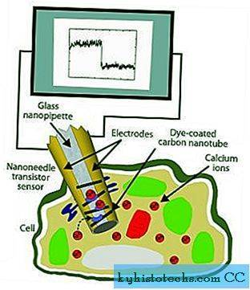

Zdravljenje raka s pomočjo nanotehnologije
Kot sem že napovedal v uvodu v medicino in nanotehnologijo, bom poskušal stvari razložiti na tak način, da bodo razumljive vsem. Tudi v tem primero, ko gre za novo in dokaj zakomplicirano stvar se bom tega načela držal.
Vsi poznamo nekoga, ki je obolel z rakom in vemo, kako zahtevno je lahko zdravljenje raka. Običajno zdravljenje raka, kot so kirurški poseg, obsevanje in kemoterapija, ne poškoduje samo rakavih celic, ampak pogosto tudi zdrave celice. Zdravljenje zaradi tega pogosto povzroči neželene učinke, kot so slabost, bruhanje, izpadanje las in okužba. Kljub temu pa ni zagotovila za ozdravitev. Novejše raziskave pa so pokazale, da se lahko nanodelci uporabijo za poškodovanje in celo uničenje rakavih celic od znotraj.
Ena izmed zamisli uporabe nanotehnologije za zdravljenje raka je enostavna na več načinov. Prizadeva si natančneje usmeriti učinek zdravil za zdravljenje raka. Natančneje usmerjeno zdravljenje preprečuje poškodovanje zdravih celic. Ena izmed metod, ki je bila preskušena na miših, je injiciranje(vsrkavanje tekočine z inejekcijo v telo subjkta) nanodelca določene vrste neposredno v rakasti tumor. Laser po injiciranju segreje nanodelce, ki nato poškodujejo ali celo uničijo rakave celice.
Uporaba nanotehnologije pri zdravljenju raka prav tako omgoča bolj zgodno diagnozo. Zaradi nanodelcev, ki so zasnovani tako, da se pritrdijo na rakave celice, je tumor viden na posnetkih že v zgodnjem razvoju bolezni. To je pomemben korak v boju proti raku, saj je zgodnja diagnoza ključna za zdravljenje te bolezni.
Pri nanotehnologiji gre za manipuliranje snovi izredno majhne velikosti. To delamo zato, ker lahko nato spremenimo obnašanje nekaterih snovi. Nanodelci niso nekaj novega, saj obstajajo tudi v naravi. Nanotehnologija pa omogoča inženiring nanomaterialov in uporabo njihovih posebnih lastnosti za veličastne stvari (na primer: zdravljenje raka), ki peljejo v znanstveni preporod.

Nanodelec v rakavi celici